Глава 1. Основные понятия и законы теории электрических цепей
1.1. Ток, напряжение, мощность1.2. Электрическая цепь, ее элементы и модели
1.3. Электрическая схема, топология электрической цепи
1.4. Законы Кирхгофа
1.5. Принцип эквивалентности. Преобразования электрических схем
1.6. Принцип наложения
1.7. Теорема замещения
1.8. Теорема об активном двухполюснике
1.9. Принцип дуальности
1.10. Теорема Телледжена. Баланс мощности
Вопросы и задания для самопроверки
Глава 1. Основные понятия и законы теории электрических цепей
1.1. Ток, напряжение, мощность
Понятия электрического тока и напряжения являются одними из основных в теории электрических цепей. Электрический ток в проводящей среде есть упорядоченное движение электрических зарядов под воздействием электрического поля (ток проводимости в металлах, электролитах, газах; ток переноса в электровакуумных приборах и др.).
Количественно электрический ток в каждый момент времени характеризуется скалярной величиной i = i (t) – мгновенным значением тока, характеризующим скорость изменения заряда q во времени:
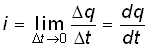
, (0.1)где  q – электрический заряд, прошедший за время
q – электрический заряд, прошедший за время  t через поперечное сечение проводника. В системе СИ заряд измеряется
в кулонах (Кл), время – в секундах (с), ток – в амперах (А). В дальнейшем для
краткости электрические токи и напряжения будем просто называть токами и напряжениями.
t через поперечное сечение проводника. В системе СИ заряд измеряется
в кулонах (Кл), время – в секундах (с), ток – в амперах (А). В дальнейшем для
краткости электрические токи и напряжения будем просто называть токами и напряжениями.
В соответствии с приведенным выше определением понятие “ток” может использоваться в двух смыслах: ток как физический процесс и ток как количественная характеристика (вместо “силы тока”).
Как функция времени ток i(t) может принимать положительные и отрицательные значения. Принято считать значение тока i(t) положительным, если движение положительно заряженных частиц совпадает с заранее выбранным направлением отсчета тока и отрицательным – в противном случае. Выбор направления отсчета тока произволен, положительное направление отсчета тока показывается стрелкой (рис. 1.1)
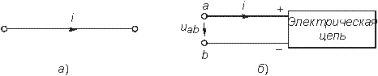
Электрическое напряжение между двумя точками электрической цепи определяется количеством энергии, затрачиваемой на перемещение единичного заряда из одной точки в другую:
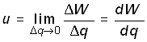
, (0.2)где W – энергия электрического поля. Единица измерения напряжения в системе СИ – вольт (В), энергии – джоуль (Дж).
В потенциальном электрическом поле напряжение между двумя точками совпадает по значению с разностью потенциалов между ними. Например, напряжение между точками а и b цепи, показанной на рис. 1.1, б,
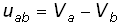
, (0.3)где Va и Vb – потенциалы точек а и b.
Значение напряжения в любой заданный момент t называется мгновенным и обозначается u=u(t). Являясь скалярной величиной, u(t) может принимать как положительные, так и отрицательные значения. Для однозначного определения знака напряжения выбирают положительное направление его отсчета, которое показывается стрелкой (рис. 1.1, б), направленной от одной точки электрической цепи к другой. Для определенности будем считать, что положительное направление отсчета совпадает с направлением стрелки от более высокого потенциала, т. е. “+”, к более низкому, т. е. “–” (рис. 1.1, б). При этом положительные направления отсчета напряжения и тока будут между собой согласованы, так как положительное направление отсчета напряжения иаb соответствует направлению перемещения положительно заряженных частиц от более высокого потенциала Va(+) к более низкому Vb(–). Очевидно, что иаb=–иbа. Применительно к напряжению на участке цепи, по которому протекает ток, часто используют термин “падение напряжения”.
Электрическая энергия, затраченная на перемещение единичного положительного заряда между двумя точками участка цепи с напряжением u (разностью потенциалов) к моменту времени t определится согласно (1.1) и (1.2) уравнением
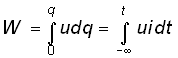
, (0.4)где принято W=0 при t=– .
.
Производная энергии по времени определяет мгновенную мощность, потребляемую элементами, входящими в участок цепи:
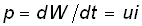
. (0.5)Мощность измеряется в ваттах (Вт). Знак мощности р определяется знаком напряжения и тока. Если р>0, мощность потребляется элементами участка цепи, а при р<0 – отдается.
По характеру изменения во времени различают постоянные, гармонические, периодические несинусоидальные, непериодические токи и напряжения. В ряде случаев (например, в цепях с распределенными параметрами) токи и напряжения могут быть не только функциями времени, но и функциями пространственных координат. В технике связи токи и напряжения как материальные носители сообщений называют сигналами.
1.2. Электрическая цепь, ее элементы и модели
Электрической цепью называют совокупность устройств, предназначенных для прохождения тока и описываемых с помощью понятий тока и напряжения. Электрическая цепь состоит из источников (генераторов) и приемников электрической энергии.
Источником называют устройство, создающее (генерирующее) токи и напряжения. В качестве источников могут выступать как первичные устройства, преобразующие различные виды энергии в электрическую (аккумуляторы, электромашинные генераторы, термоэлементы, пьезодатчики и т. д.), так и устройства, преобразующие электрическую энергию первичных источников в энергию электрических колебаний требуемой формы.
Приемником называют устройство, потребляющее (запасающее) или преобразующее электрическую энергию в другие виды энергии (тепловую, механическую, световую и т. д.). Физическими элементами реальной электрической цепи являются резисторы, катушки индуктивности, конденсаторы, трансформаторы, транзисторы, электронные лампы и другие компоненты электроники. При этом электрическая цепь может конструктивно выполняться либо из указанных выше дискретных компонентов, либо изготовляться в едином технологическом цикле (интегральные схемы). Электрические цепи, содержащие как интегральные, так и дискретные компоненты, получили наименование гибридных.
В основе теории электрических цепей лежит принцип моделирования. При этом реальные электрические цепи заменяются некоторой идеализированной моделью, состоящей из взаимосвязанных идеализированных элементов. Последние представляют собой простые модели, используемые для аппроксимации (приближения) свойств простых физических элементов или физических явлений. В зависимости от точности приближения одна и та же физическая электрическая цепь может быть представлена различными моделями, причем, чем точнее модель, тем она сложнее. На практике обычно ограничиваются наиболее простыми моделями, обеспечивающими решение задач анализа и синтеза реальной цепи с заданной точностью. Важно иметь в виду, что если физические элементы и явления могут быть описаны лишь приближенно, то идеализированные
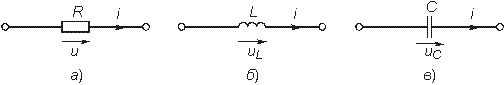
Рис. 1.2
элементы определяются точно. К простейшим идеализированным элементам модели электрической цепи относятся независимые и зависимые источники (активные элементы) и элементы резистивного сопротивления, индуктивности и емкости (пассивные элементы).
Систему уравнений, описывающую модель электрической цепи, называют математической моделью цепи. В теории электрических цепей изучаются общие свойства моделей цепей, поэтому в дальнейшем под электрической цепью будем понимать ее модель, свойства которой близки к свойствам реальной физической цепи.
Пассивные элементы. Резистивным сопротивлением называют идеализированный элемент, обладающий только свойством необратимого рассеивания энергии. Условное обозначение резистивного сопротивления показано на рис. 1.2, а. Математическая модель, описывающая свойства резистивного сопротивления, определяется законом Ома:
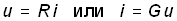
. (0.6)Коэффициенты пропорциональности R и G в формулах (1.6) называются соответственно сопротивлением и проводимостью элемента и являются его количественной характеристикой, причем при согласованных направлениях тока и напряжения R и G положительны и связаны обратной зависимостью R=1/G. Измеряют в системе СИ сопротивление R в омах (Ом), а проводимость G – в сименсах (См).
Уравнение (1.6) определяет зависимость напряжения от тока и носит название вольт-амперной характеристики (ВАХ) резистивного сопротивления. Если R постоянно, то ВАХ линейна (рис. 1.3, а) и соответствует линейному резистивному элементу. Если же R зависит от протекающего через него тока или приложенного к нему напряжения, то ВАХ становится нелинейной (рис. 1.3, б) и соответствует нелинейному резистивному сопротивлению.
Мощность в резистивном сопротивлении можно определить согласно уравнению (1.5):
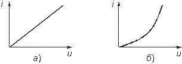
Рис. 1.3
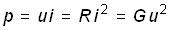
. (0.7)Мощность в резистивном сопротивлении всегда больше нуля, так как оно только потребляет энергию, преобразуя ее в тепло или другие виды энергии.
Индуктивным элементом называют идеализированный элемент электрической цепи, обладающий только свойством накопления им энергии магнитного поля. Условное обозначение индуктивного элемента изображено на рис. 1.2, б.
Математическая модель, описывающая свойства индуктивного элемента определяется соотношением
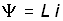
, (0.8)где
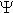
– потокосцепление, характеризующее суммарный магнитный поток, пронизывающий катушку:
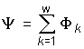
,где w – число витков катушки; k – номер витка, с которым сцеплен поток Ф k. В простейшем случае, когда каждый из потоков Ф k сцеплен со всеми витками катушки =Ф w.
Коэффициент пропорциональности L в формуле (1.8) называется индуктивностью. Он имеет положительное значение и является количественной характеристикой индуктивного элемента. Измеряется индуктивность L в генри (Гн), а магнитный поток Ф – в веберах (Вб). Если величина L постоянна, то зависимость (1.8) (вебер-амперная характеристика) линейна и соответствует линейному индуктивному элементу. Если же L зависит от электрического режима (тока или напряжения), то зависимость (1.8) нелинейна и соответствует нелинейному элементу индуктивности.
Связь между током и напряжением на индуктивном элементе определяется согласно закону электромагнитной индукции выражением
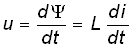
, (0.9)т. е. напряжение на индуктивном элементе пропорционально скорости изменения протекающего через него тока. Следовательно, при протекании через L постоянного тока и=0 и свойства индуктивного элемента эквивалентны коротко замкнутому (КЗ) участку (см. рис. 1.1, а).
Мгновенная мощность электрических колебаний в индуктивном элементе
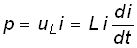
,т. е. может быть как положительной (при совпадении направлений и и i), так и отрицательной (при несовпадении направлений и и i). Причем в первом случае (p>0) магнитная энергия запасается индуктивным элементом, а во втором (р<0) – отдается во внешнюю цепь.
Энергия, запасенная в индуктивном элементе к моменту t, определится согласно (1.4)
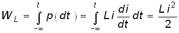
, (0.10)т. е. всегда положительна.
Емкостным элементом называют идеализированный элемент электрической цепи, обладающий только свойством накапливать энергию электрического поля. Условное обозначение емкостного элемента показано на рис. 1.2, в.
Математическая модель, описывающая свойства емкостного элемента, определяется вольт-кулонной характеристикой
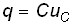
. (0.11)Коэффициент пропорциональности С в формуле (1.11) называется емкостью и является количественной характеристикой емкостного элемента. При согласованных направлениях тока и напряжения величина С всегда положительна. Измеряется С в фарадах (Ф).
Если величина С постоянная, то вольт-кулонная характеристика (1.11) линейна и соответствует линейному емкостному элементу. Если же параметр С зависит от электрического режима, то характеристика (1.11) нелинейна и соответствует нелинейному элементу.
Между током и напряжением на емкостном элементе существует связь, определяемая согласно (1.1) и (1.11) равенством
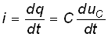
, (0.12)т. е. ток в емкостном элементе пропорционален скорости изменения приложенного к нему напряжения. При постоянном напряжении u=const, i=0 и емкостной элемент по своим свойствам эквивалентен разрыву цепи.
Мощность электрических колебаний в емкостном элементе
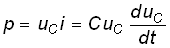
,т. е. может быть как положительной, так и отрицательной в зависимости от направлений тока и напряжения. При р>0 энергия электрического поля запасается емкостным элементом, а при р<0 – отдается во внешнюю цепь.
Энергия, запасенная в емкостном элементе к моменту t,
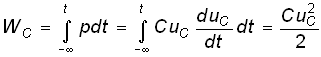
, (0.13)т. е. всегда положительна.
В инженерной практике резистивное сопротивление, индуктивный и емкостной элементы часто называют просто сопротивлением, индуктивностью и емкостью, отождествляя, по существу, элемент с его параметром. В дальнейшем для простоты, где это не приведет к недоразумениям, также будем пользоваться этой терминологией.
Рассмотренные идеализированные резистивный, индуктивный и емкостной элементы могут служить простейшими моделями резисторов, высококачественных катушек индуктивностей с малыми потерями и электрических конденсаторов с высокими диэлектрическими свойствами в области низких и средних частот. В области высоких, а особенно сверхвысоких частот модели резисторов, катушек индуктивности и конденсаторов становятся более сложными. Так, на высоких частотах резисторы уже нельзя с достаточной точностью описать идеальным резистивным элементом (1.6) из-за влияния различных “паразитных” емкостей. Более точной здесь будет модель
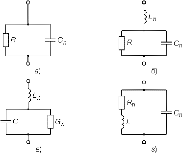
Рис. 1.4
параллельного соединения R и Сп, изображенная на рис. 1.4, а. В некоторых случаях возникает необходимость учета, “паразитной” индуктивности Lп, учитывающей эффект накопления энергии магнитного поля в элементах резистора (рис. 1.4, б).
На высоких и сверхвысоких частотах также начинает проявляться поверхностный эффект, выражающийся в неравномерном распределении тока по сечению проводника (скин-эффект). В результате этого сопротивление R проводника начинает расти с увеличением частоты. Причем, чем толще проводник, тем при меньших частотах начинает проявляться скин-эффект. На сверхвысоких частотах зависимость сопротивления круглого медного проводника от частоты f можно выразить эмпирической формулой
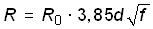
,где R0 – сопротивление проводника постоянному току, Ом; d – диаметр сечения проводника, мм; f – частота, МГц.
Модель конденсатора, кроме емкостного элемента С, может содержать параллельную проводимость Gп, учитывающую потери энергии в диэлектрике, и последовательную индуктивность Lп, учитывающую эффект запасения энергии магнитного поля в конструктивных элементах конденсатора (рис. 1.4, в).
Модель катушки индуктивности может учитывать потери энергии в проводе и энергию электрического поля, запасаемую между витками катушки путем дополнительного включения сопротивления потери Rп и “паразитной” емкости Сп (рис. 1.4, г).
В зависимости от условий применения и конструктивных особенностей, требований к точности анализа могут использоваться и более сложные модели резисторов, катушек индуктивностей и конденсаторов.
В зависимости от соотношения между длинами цепи l и волны тока и напряжения
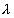
различают цепи с сосредоточенными и распределенными параметрами. При l< можно считать, что параметры R, L, С сосредоточены в резисторах, катушках индуктивности и конденсаторах; при l>> необходимо пользоваться моделью цепи с распределенными параметрами (см. гл. 13).Рассмотренные выше резистивные, индуктивные и емкостные элементы относятся к двухполюсным, так как содержат только два зажима (полюса, вывода). Однако кроме двухполюсных элементов в теории цепей и электронике широко используются трехполюсные, четырехполюсные и многополюсные элементы. Например, свойства трансформатора как физического устройства, содержащего две индуктивно связанные катушки, не могут быть описаны моделью только двухполюсных элементов с индуктивностями L1 и L2. Для его моделирования необходимо введение еще одного параметра – взаимной индуктивности М;
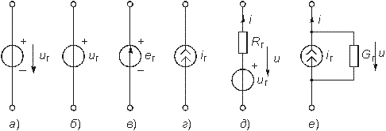
Рис. 1.5
при этом моделью трансформатора будет являться четырехполюсный элемент (см. гл. 3).
Активные элементы. Активными элементами электрической цепи являются зависимые и независимые источники электрической энергии. К зависимым источникам относятся электронные лампы, транзисторы, операционные усилители и другие, к независимым источникам – аккумуляторы, электрогенераторы, термоэлементы, пьезодатчики и другие преобразователи. Независимые источники можно представить в виде двух моделей: источника напряжения и источника тока.
Независимым источником напряжения называют идеализированный двухполюсный элемент, напряжение на зажимах которого не зависит от протекающего через него тока. Условное обозначение источника напряжения показано на рис. 1.5, а.
Источник напряжения полностью характеризуется своим задающим напряжением иг, или электродвижущей силой (ЭДС) ег (рис. 1.5, в). Внутреннее сопротивление источника напряжения равно нулю и иногда при изображении источника напряжения обозначают знаком “+” только один из зажимов и не показывают стрелкой положительное направление иг, имея в виду, что оно действует от “+” к “–” (рис. 1.5, б). Часто при анализе цепей ограничиваются изображением только зажимов источника напряжения, как показано на рис. 1.1, б.
Вольт-амперная характеристика идеального источника напряжения представляет собой прямую, параллельную оси токов (рис. 1.6, а).
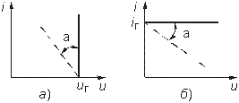
Рис. 1.6
Такой идеализированный источник способен отдавать во внешнюю цепь бесконечно большую мощность. Ясно, что физически такой источник реализовать нельзя. Однако в определенных пределах изменения тока он достаточно близко отражает реальные свойства независимых источников.
Независимым источником тока называют идеализированный двухполюсный элемент, ток которого не зависит от напряжения на его зажимах. Условное обозначение источника тока показано на рис. 1.5, г. Источник тока полностью характеризуется своим задающим током iг. Внутренняя проводимость источника тока равна нулю (внутреннее сопротивление бесконечно велико) и ВАХ представляет собой прямую, параллельную оси напряжений (рис. 1.6, б). Такой источник также способен отдавать во внешнюю цепь бесконечно большую мощность и является идеализацией реальных независимых источников.
Свойства реальных источников с конечным внутренним сопротивлением
Rг можно моделировать с помощью независимых
источников напряжения и тока с дополнительно включенными резистивными сопротивлениями
Rг или проводимостью Gг
(см. рис. 1.5, д, е). Напряжение u и отдаваемый ток
i этих источников зависят от параметров подключаемой к ним цепи, а их
ВАХ имеет тангенс угла наклона  , пропорциональный Rг и Gг
соответственно (штриховые линии на рис. 1.6).
, пропорциональный Rг и Gг
соответственно (штриховые линии на рис. 1.6).
Однако свойства целого ряда электронных устройств нельзя описать моделью соединенных между собой указанных выше независимых источников и пассивных двухполюсных элементов. К числу таких устройств относятся электронные лампы, транзисторы, операционные усилители и другие электронные приборы. Это так называемые зависимые или управляемые источники.
Зависимый источник представляет собой четырехполюсный элемент (рис. 1.7) с двумя парами зажимов – входных (1, 1' ) и выходных (2, 2' ). Входные ток i1 и напряжение и1 являются управляющими. Различают следующие разновидности зависимых источников: источник напряжения, управляемый напряжением (ИНУН); источник тока, управляемый напряжением (ИТУН);
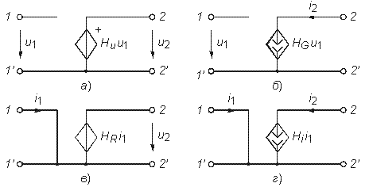
Рис. 1.7
источник напряжения, управляемый током (ИНУТ); источник тока управляемый током (ИТУТ). На рис. 1.7 показаны условные обозначения зависимых источников различного типа.
В ИНУН (рис. 1.7, а) входное сопротивление бесконечно велико, входной ток i1=0, a выходное напряжение u2 связано со входным u1 равенством u2=Huu1, где Hu – коэффициент, характеризующий усиление по напряжению зависимого источника. Источник типа ИНУН является идеальным усилителем напряжения.
В ИТУН (см. рис. 1.7, б) выходной ток i2 управляется входным напряжением u1, причем i1=0 и ток i2 связан с u1 равенством i2 =HGu1, где HG – коэффициент, имеющий размерность проводимости.
В ИНУТ (рис. 1.7, в) входным током i1 управляется выходное напряжение u2, входная проводимость бесконечно велика: u1=0, u2=HRi1, где HR – коэффициент, имеющий размерность сопротивления.
В ИТУТ (рис. 1.7, г) управляющим током является i1, а управляемым i2. Входная проводимость ИТУТ, как и ИНУТ, бесконечно велика, u1=0, i2=Hii1, где Hi – коэффициент, характеризующий усиление по току. Источник типа ИТУТ является идеальным усилителем тока. Коэффициенты Hu, HG, HR, Hi, представляют собой вещественные положительные или отрицательные числа и полностью характеризуют соответствующий источник.
Примером зависимого источника является операционный усилитель (ОУ). Выпускаемые в виде отдельной микросхемы (рис. 1.8, а) ОУ широко применяются в качестве активных элементов электрической цепи.
Операционный усилитель имеет два входа: 1 – неинвертирующий и 2 – инвертирующий. При подаче напряжения u1 на вход 1 – выходное напряжение u2 имеет ту же полярность, что и u1, а при подаче u1
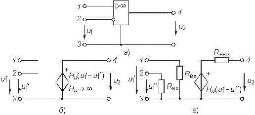
Рис. 1.8
на вход 2 напряжение u2 меняет свою полярность на противоположную.
Идеальный ОУ (рис. 1.8, б) представляет собой ИНУН с
бесконечно большим коэффициентом усиления (Hu 
 ), бесконечно большими входным сопротивлением и выходной проводимостью (выходное
сопротивление равно нулю).
), бесконечно большими входным сопротивлением и выходной проводимостью (выходное
сопротивление равно нулю).
Реальный ОУ можно представить в виде ИНУНа с конечными входным Rвх и выходным Rвых сопротивлениями (рис. 1.8, в).
Кроме ОУ в качестве активных элементов электрических цепей широко используются различные электронные и полупроводниковые приборы: электронные лампы, биполярные и полевые транзисторы и др.
На рис. 1.9, а приведена электронная лампа (триод) и ее модели (эквивалентные схемы замещения) в форме ИТУН (рис. 1.9, б) и ИНУН (рис. 1.9, в), где обозначены Gi = 1|Ri, – внутренняя проводимость лампы, S = di2|du – крутизна;
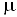
= SRi, – коэффициент усиления лампы. Параметры Gi, S, обычно приводятся в справочниках. Эти эквивалентные схемы являются линейными и могут использоваться в области низких частот. В нелинейном режиме работы активного элемента используются более сложные модели (см. гл. 10, 11). В области высоких частот в моделях активных элементов появляются кроме резисторов, реактивн ые элементы – обычно емкость (см. табл. 1.1).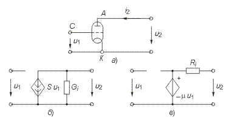
Рис. 1.9
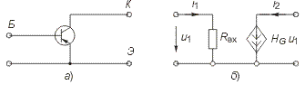
Рис. 1.10
Таблица 1.1
| Тип активного элемента | Обозначение на схеме | Эквивалентная схема в области Нч | Эквивалентная схема в области Вч | Сравнение модели |
| Триод |
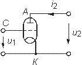 А - анод К - катод С - сетка |
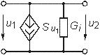 |
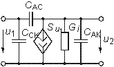 сас емкость анод-сетка ССк емкость сетка-катод сак емкость анод-катод |
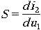 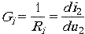 |
| Биполярный транзистор (ОБ) | 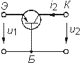 Б - база К - коллектор Э - эмиттер |
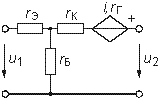 |
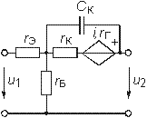 сК емкость коллектора |
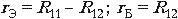 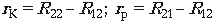 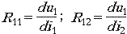 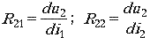 |
Биполрный р-n-p транзистор (ОЭ) | 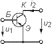 |
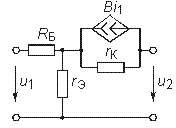 |
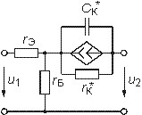 |
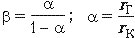 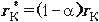 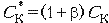 |
| ѕолевой транзистор с каналом n-типа** | 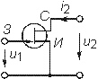 З - затвор И - исток С - сток |
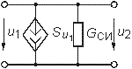 |
СзИ - емкость затвор-исток Сзс - емкость затвор-сток ССИ - емкость сток-исток |
* Биполярный транзистор p-n-p типа имеет модель аналогичную p-n-p. ** ѕолевой транзистор с p-каналом имеет модель аналогичную канала n-типа.
Транзисторы, как правило, имеют более сложную структуру, чем лампы и описываются в зависимости от решаемых задач более сложными моделями [2]. Наиболее распространенными для биполярных транзисторов являются Т-образные и П-образные эквивалентные схемы замещения, причем, последние можно получить из первых методами преобразования “звезда – треугольник” (см. § 1.5). В табл. 1.1 приведены Т-образные схемы замещения биполярных транзисторов, включенных по схеме с общей базой (ОБ) и общим эмиттером (ОЭ) в области низких и высоких частот и основные соотношения, описывающие их модели.
Иногда для анализа цепей с биполярными транзисторами используются модель ИТУН с конечным входным сопротивлением (рис. 1.10). Для полевых транзисторов обычно используется модель в форме ИТУН (табл. 1.1).
Кроме рассмотренных эквивалентных схем нередко (особенно в справочной литературе) электронные лампы и транзисторы рассматриваются как бесструктурные четырехполюсники с той или иной системой параметров (см. гл. 12).
Отличительной особенностью зависимых источников является их необратимость, т. е. цепи с этими источниками имеют четко выраженный вход и выход. Таким образом, для цепей с зависимыми источниками различают путь прямого прохождения сигнала (от входа к выходу) и обратного прохождения (с выхода на вход), реализуемого с помощью специальных цепей обратной связи (ОС) (гл. 14). Необходимость введения в активные цепи ОС объясняется рядом важных качеств, которыми эти цепи обладают: возможностью моделирования различных функций (см. § 2.7) (суммирование, интегрирование, дифференцирование и др.), генерированием и усилением колебаний, моделированием пассивных элементов типа R, L, С и их преобразованием (например, С и L), перемещение нулей и полюсов функции цепи (см. гл. 14, 15) и др.
1.3. Электрическая схема, топология электрической цепи
Кроме понятия электрической цепи в инженерной практике широкое распространение нашел термин “электрическая схема”. В теории цепей схемой называют графическое изображение электрической цепи. Элементам схемы соответствуют активные и пассивные элементы электрической цепи.
В микроэлектронике понятие электрической цепи и электронной схемы часто отождествляют между собой. Так, микросхемой (интегральной схемой) называют интегральную электрическую цепь, содержащую сотни и тысячи простейших активных и пассивных элементов. Чтобы не ломать сложившуюся традицию, будем использовать термин “электрическая схема” или просто “схема” применительно к графическому изображению электрической цепи или электронной схемы и термины “электрическая цепь” или “электронная (микроэлектронная, интегральная) схема” применительно к моделям реальных физических электрических или электронных устройств.
Рис. 1.11
Рис. 1.12
Для анализа электрических цепей в последнее время все большее распространение находят матрично-топологические методы. В их основе лежит представление электрической схемы с помощью графа цепи. Графом цепи называют геометрическую систему линий (ветвей), соединяющих заданные точки (узлы). Если ветви графа ориентированы по направлению токов ветвей, то граф называется ориентированным (направленным). На рис. 1.11, а изображена электрическая схема и ее ориентированный (рис. 1.11, б) граф. Граф содержит всю информацию о геометрической структуре схемы.
Простым узлом называют место соединения зажимов двух элементов (рис. 1.12, а), а сложным – место соединения зажимов трех и более элементов (рис. 1.12, б).
Ветвью называют часть цепи, включенной между двумя узлами, через которые она обменивается энергией с остальной цепью. Ветви, подсоединенные к одной паре узлов, образуют параллельное соединение (рис. 1.12, в).
Последовательно соединенные ветви, связывающие два заданных узла образуют простой путь, если в нем нет повторяющих узлов. Например, между узлами 1 и 4 (рис. 1.11, б) простой путь образуется ветвями 3, 5 или 3, 4 и т. д. Замкнутый путь называется контуром (рис. 1.12, в).
Рис. 1.13
Подграфом называют часть графа. Подграф является связным, если любые его два узла связаны, т. е. соединены ветвями.
Деревом графа называют связный подграф, содержащий все узлы, но не содержащий ни одного контура (рис. 1.13). Ветви дерева называют ребрами (на рис. 1.13 показаны сплошными линиями).
В теории графов доказывается, что число ветвей дерева, содержащего nу узлов, определяется уравнением
. (0.14)
Совокупность ветвей не входящих в состав дерева, образует его дополнение (на рис. 1.13 помечено штриховыми линиями). Ветви дополнения называют хордами. Можно показать, что число хорд
, (0.15)
где nв – общее число ветвей исходного графа.
Сечением графа называют минимальное множество ветвей, удаление которых разбивает граф на две несвязанных части (подграфы). На рис. 1.11, б показан пример двух сечений, образованных ветвями 1, 2, 4, 5 (по линии А—А) и 3, 6 (по линии В—В). Добавление любой из ветвей сечения делает граф связным. Обычно сечение изображают в виде замкнутой линии, рассекающей граф цепи на несвязанные компоненты. Сечение, “рассекающее” только одну ветвь дерева, называют главным сечением. Причем, каждому дереву соответствует своя совокупность главных сечений (рис. 1.13, сечения S1, S2, S3). Число главных сечений равно числу ветвей дерева (1.14).
Аналитически граф можно описать с помощью структурной матрицы Ас (матрицы соединений, инциденций), представляющей собой прямоугольную таблицу с числом столбцов, равным числу ветвей, и числом строк, равным числу узлов. Если положительное направление тока в ветви l выбрать от узла k, то элементы структурной матрицы akl определяются из условия:
Например, для графа, изображенного на рис. 1.11, б матрица Ас имеет вид
Анализ матрицы Ас показывает, что сумма элементов каждого ее столбца равна нулю. Это является следствием зависимости одной из строк, поэтому ее можно исключить из Ас. Узел, строка которого исключается, называют базисным, а матрица А0, образующаяся при этом, редуцированная.
Кроме матрицы Ас при анализе электрических цепей используется матрица сечений С, представляющая собой таблицу со строками, соответствующими сечениям графа и столбцами – его ветвями. Если за положительное направление принять направление ветви внутрь области, охваченной сечением, то элементы матрицы сечений сkl определяются следующим образом:
Так, матрица главных сечений для графа, изображенного на рис. 1.13, б, будет иметь вид
Матрицей контуров В называют таблицу, с числом строк равным числу независимых контуров, и числом столбцов равным числу ветвей. Элементы матрицы контуров определяются по правилу
Например, для графа, изображенного на рис. 1.11, б, матрица
Число независимых контуров определяется числом хорд графа (1.15).
1.4. Законы Кирхгофа
В теории цепей различают два типа задач: задачи анализа и синтеза электрических цепей. К задаче анализа относятся все задачи, связанные с определением токов, напряжений или мощностей в элементах цепи, конфигурация и параметры которой известны. В задачах синтеза, напротив – известны токи и напряжения в отдельных элементах и требуется определить вид цепи и ее параметры, т. е. синтез является обратной задачей по отношению к анализу. Следует отметить, что задача синтеза существенно сложнее задачи анализа и будет рассмотрена в гл. 16.
В основе методов анализа электрических цепей лежат законы Кирхгофа.
Первый закон – закон токов Кирхгофа (ЗТК) формулируется по отношению к узлам электрической цепи и отражает тот факт, что в узлах не могут накапливаться заряды. Он гласит: алгебраическая сумма токов ветвей, сходящихся в любом узле электрической цепи, равна нулю. Формально это записывается так:
, (0.16)
где m – число ветвей, сходящихся в узле.
В уравнении (1.16) токи, одинаково ориентированные относительно узла, имеют одинаковые знаки. Условимся знаки выходящих токов считать положительными, а входящих – отрицательными. Тогда, например, для узла 1 схемы, изображенной на рис. 1.11, а, согласно ЗТК –i1 + i2 + i3 = 0. Число независимых уравнений, составляемых по ЗТК, равно числу независимых узлов электрической цепи и определяется уравнением (1.14).
Закон токов справедлив и по отношению к сечениям электрической цепи. Покажем это на примере сечения S3 (рис. 1.13, а). Запишем ЗТК для узлов 1 и 2:
для узла 1: –i1 + i2 + i3 = 0;
для узла 2: –i3 + i4 + i5 = 0.
Сложив между собой эти уравнения, получим ЗТК для сечения S3:
–i1 + i2 + i4 + i5 = 0.
Второй закон – закон напряжений Кирхгофа (ЗНК) формулируется по отношению к контурам и гласит: алгебраическая сумма напряжений ветвей в любом контуре равна нулю:
, (0.17)
где п – число ветвей, входящих в контур.
В уравнении (1.17) напряжения, совпадающие с направлением обхода контура, записываются со знаком “+”, а не совпадающие – со знаком “–”.
Составим, например, уравнение по ЗНК для цепи, изображенной на рис. 1.11, а. В соответствии с направлением для контура I: –uг + u1 + u2' + u2" = 0 для контура II: –u2' –u2" + u3 + u4 + u6 = = 0; для контура III: –u4 + u5 = 0.
Общее число линейно-независимых уравнений, составляемых по ЗНК, определяется числом независимых контуров, равных числу хорд (см. (1.15)).
Уравнение ЗТК и ЗНК можно записать в матричной форме, используя редуцированную структурную матрицу А0 и контурную матрицу В.
Закон токов получается путем перемножения матрицы А0 на матрицу-столбец токов ветвей:
,
где Т – знак транспонирования;
. (0.18)
Закон токов можно записать и через матрицу главных сечений:
. (0.19)
Умножив контурную матрицу В на матрицу-столбец напряжения ветвей Uв = || u1u2 ... un ||T получим ЗНК в матричной форме:
. (0.20)
1.5. Принцип эквивалентности. Преобразования электрических схем
В основе различных методов преобразования электрических схем лежит принцип эквивалентности, согласно которому напряжения и токи в ветвях схемы, не затронутых преобразованием, остаются неизменными. Преобразования электрических схем применяются для упрощения расчетов. Рассмотрим наиболее типичные преобразования, основанные на принципе эквивалентности.
Последовательное соединение элементов. Согласно ЗТК при последовательном соединении элементов через них протекает один и тот же ток (рис. 1.14). Согласно ЗНК напряжение, приложенное ко всей цепи,
. (0.21)
Тогда для последовательного соединения резистивных элементов R1, R2, ... , Rn (рис. 1.14, а) с учетом (1.6) будем иметь
,
Рис. 1.14
где
. (0.22)
Для последовательного соединения индуктивных элементов L1, L2, ... , Ln с учетом (1.9) получаем (рис. 1.14, б)
,
где
. (0.23)
Для последовательного соединения емкостных элементов С1, С2, ... , Сn с учетом (1.12) находим (рис. 1.14, в)
,
где
. (0.24)
Таким образом, цепь из п последовательно соединенных резистивных, индуктивных или емкостных элементов может быть заменена одним эквивалентным резистивным, индуктивным или ем- костным элементом с параметрами, определяемыми формулами (1.22)–(1.24). Причем, при нахождении эквивалентного сопротивления или эквивалентной индуктивности необходимо суммировать сопротивления и индуктивности отдельных резистивных и индуктивных элементов, а для нахождения эквивалентной обратной емкости – суммировать величины, обратные емкости отдельных емкостных элементов. В частности, при n = 2
. (0.25)
При последовательном соединении независимых источников напряжения они заменяются одним эквивалентным источником напряжения с задающим напряжением uг, равным алгебраической сумме задающих напряжений отдельных источников. Причем со знаком “+” берутся задающие напряжения, совпадающие с задающим напряжением эквивалентного источника, а со знаком “–” – несовпадающие (рис. 1.15).
Параллельное соединение элементов. При параллельном соединении элементов согласно ЗНК к ним будет приложено одно и то же напряжение (рис. 1.16). Согласно ЗТК для тока каждой из схем, изображенных на рис. 1.16, можно записать
. (0.26)
Рис. 1.15
Рис. 1.16
На основании этого, уравнения с учетом формул (1.6), (1.9) и (1.12) получаем:
для параллельного соединения резистивных элементов
,
где
; (0.27)
для параллельного соединения емкостных элементов
,
где
; (0.28)
для параллельного соединения индуктивных элементов
,
где
. (0.29)
Следовательно, цепь из п параллельно соединенных резистивных, индуктивных или емкостных элементов можно заменить одним эквивалентным резистивным, индуктивным или емкостным элементом с параметрами, определяемыми формулами (1.27)— (1.29).
Таким образом, при параллельном соединении резистивных, емкостных и индуктивных элементов для нахождения эквивалентных проводимостей и емкости цепи проводимости или емкости отдельных элементов складываются. Эквивалентная обратная индуктивность цепи находится суммированием обратных индуктивностей отдельных индуктивных элементов. В частности, при п = 2
. (0.30)
Параллельно соединенные независимые источники тока можно заменить одним эквивалентным источником тока с задающим током, равным алгебраической сумме задающих токов отдельных источников. Причем со знаком “+” берутся задающие токи, совпадающие по направлению с задающим током эквивалентного источника, а со знаком “–” – не совпадающие (рис. 1.17).
При расчете электрических цепей часто возникает необходимость преобразования источника напряжения с параметрами uг и Rг (см. рис. 1.5, д) в эквивалентный источник тока с параметрами iг и Gг (см.
Рис. 1.17
рис. 1.5, е), или наоборот – преобразование источника тока в эквивалентный источник напряжения. Эти преобразования осуществляются в соответствии с формулами
, (0.31)
которые могут быть получены из ЗНК и ЗТК для схемы на рис. 1.5, д, е и принципа эквивалентности.
1.6. Принцип наложения
Принцип наложения (суперпозиции) имеет важнейшее значение в теории линейных электрических цепей. Подавляющее число методов анализа линейных цепей базируется на этом принципе. Если рассматривать напряжения и токи источников как задающие воздействия, а напряжение и токи в отдельных ветвях цепи как реакцию (отклик) цепи на эти воздействия, то принцип наложения можно сформулировать следующим образом: реакция линейной цепи на сумму воздействий равна сумме реакций от каждого воздействия в отдельности.
Принцип наложения можно использовать для нахождения реакции в линейной цепи, находящейся как под воздействием нескольких источников, так и при сложном произвольном воздействии одного источника.
Рассмотрим вначале случай, когда в линейной цепи действует несколько источников. В соответствии с принципом наложения для нахождения тока i или напряжения и в заданной ветви осуществим поочередное воздействие каждым источником и найдем соответствующие частные реакции ik и uk на эти воздействия. Тогда результирующая реакция в соответствии с принципом наложения определится как
, (0.32)
где п – общее число источников.
Если в линейной цепи приложено напряжение сложной формы, применение принципа наложения позволяет после разложения этого воздействия на сумму простейших найти реакцию цепи на каждое из них в отдельности с последующим наложением полученных результатов. Следует отметить,
Рис. 1.18
что принцип наложения является следствием линейности уравнений, которые описывают цепь, поэтому его можно применить к любым физическим величинам, которые связаны между собой линейной зависимостью (например, ток и напряжение). В то же время этот принцип нельзя использовать при вычислении мощности, так как она связана с напряжением и током квадратичной зависимостью (1.7).
Принцип наложения лежит в основе большинства временных и частотных методов расчета линейных цепей, которые рассматриваются в последующих главах. В отличие от линейных для нелинейных цепей принцип суперпозиции неприменим – и это обстоятельство часто служит критерием оценки линейности или нелинейности электрической цепи.
Для оценки линейности электрической цепи подадим на ее вход воздействие x(t) в виде напряжения или тока (рис. 1.18) и будем наблюдать реакцию y(t) на выходе. Если при воздействии kx(t) (где k – вещественное число) реакция равна ky(t), то данная цепь будет линейной. Если такой пропорциональности нет, то цепь является нелинейной.
Многие нелинейные цепи в режиме малых сигналов также могут считаться линейными и к ним может быть применен принцип суперпозиции. Все это свидетельствует о чрезвычайно важном месте, который занимает принцип наложения в теории электрических цепей.
Большая часть радиотехнических устройств и систем относится к классу линейных цепей: это усилители, фильтры, корректоры, интеграторы, дифференциаторы, другие цепи, предназначенные для линейной обработки сигналов. В то же время имеется значительное количество устройств, которые нельзя отнести к классу линейных цепей и для их анализа необходимо использовать специальные методы (см. гл. 10, 11, 15).
1.7. Теорема замещения
При обосновании некоторых методов анализа электрических цепей используется теорема замещения, которую можно сформулировать следующим образом: значение всех токов и напряжений в цепи не изменится, если любую ветвь цепи с напряжением и и током i (рис. 1.19, а) заменить источником напряжения с задающим напряжением uг = u (рис. 1.19, б) или источником тока с задающим током iг (рис. 1.19, в).
Рис. 1.19
Докажем эту теорему на примере источника напряжения (рис. 1.19, б). Для этого включим в ветвь с R (рис. 1.19, а) два источника напряжения с задающим напряжением u1 = u2 = Ri и направленные навстречу друг другу (рис. 1.19, г).
Приняв потенциал узла V0 = 0, найдем потенциалы узлов V3, V2, V1:
.
Таким образом, потенциал узла I в схеме рис. 1.19, а и в схеме рис. 1.19, г оказывается одинаковым. А так как V2 = 0 и V0 = 0, то закорачивая их между собой, приходим к схеме рис. 1.19, б, что и доказывает теорему. Аналогично доказывается и теорема замещения источником тока (рис. 1.19, в).
Теорема замещения справедлива как по отношению к линейным, так и нелинейным цепям, так как при ее доказательстве не накладывается на выделенную ветвь никаких ограничений, кроме того, что она обменивается энергией с остальной частью цепи только через зажимы 1–0 с помощью тока i.
1.8. Теорема об активном двухполюснике
Теорема об активном двухполюснике используется обычно в случае, когда надо найти реакцию цепи (ток или напряжение) в одной ветви. При этом удобно всю остальную часть цепи, к которой подключена данная ветвь, рассматривать в виде двухполюсника (на рис. 1.20, а) показана резистивная ветвь). Двухполюсник называют активным, если он содержит источники электрической энергии, и пассивным – в противном случае. На рисунках активный двухполюсник будем обозначать буквой А, а пассивный – П. Более подробно определение и общая теория двухполюсников излагается в гл. 4.
Рис. 1.20
Рис. 1.21
Различают две модификации теоремы об активном двухполюснике: теорема об эквивалентном источнике напряжения (теорема Тевенина) и теорема об эквивалентном источнике тока (теорема Нортона).
Теорема об эквивалентном источнике напряжения. Согласно теореме Тевенина ток в любой ветви линейной электрической цепи не изменится, если активный двухполюсник, к которому подключена данная ветвь, заменить эквивалентным источником (генератором) напряжения с задающим напряжением, равным напряжению холостого хода на зажимах разомкнутой ветви и внутренним сопротивлением, равным эквивалентному входному сопротивлению пассивного двухполюсника со стороны разомкнутой ветви (рис. 1.20, б).
Для доказательства этой теоремы предположим, что цепь не содержит зависимых источников. Тогда, разомкнув ветвь с элементом R, определим расчетным или экспериментальным путем напряжение холостого хода uxx (рис. 1.21, а). Затем включим в эту ветвь навстречу друг другу два источника напряжения с задающим напряжением uг = uxx (рис. 1.21, б). Ток в ветви с R при этом (рис. 1.21, б) не изменится по сравнению с током i в исходной схеме (рис. 1.20, а). Результирующий ток в выделенной ветви найдем в соответствии с принципом наложения: i = iA + i1 + i2, где iA – частичный ток, обусловленный активным двухполюсником; i1 – ток, обусловленный действием источника uг1; i2 – ток, обусловленный действием источника uг2. Однако напряжение активного двухполюсника и задающее uг2 действует навстречу друг другу, поэтому iA + i2 = 0. Следовательно, ток в цепи i = i1 будет обусловлен только действием источника с uг1 = uxx (см. рис. 1.20, б). Частичный ток i1 может быть найден, если положить все задающие напряжения и токи активного двухполюсника равными нулю. Получившийся при этом пассивный двухполюсник полностью характеризуется своим эквивалентным сопротивлением Rэ = Rг относительно выделенных зажимов. Таким образом, приходим к схеме, изображенной на рис. 1.20, б и теорема доказана.
Теорема об эквивалентном источнике тока (теорема Нортона): ток в любой ветви линейной электрической цепи не изменится, если активный двухполюсник, к которому подключена данная ветвь, заменить эквивалентным источником тока с задающим током, равным току короткого замыкания этой ветви, и внутренней проводимостью, равной эквивалентной входной проводимости со стороны разомкнутой ветви (см. рис. 1.20, в).
Доказательство этой теоремы проще всего осуществить путем преобразования эквивалентного источника напряжения (см. рис. 1.20, б) в эквивалентный источник тока (рис. 1.20, в) с параметрами
, (0.33)
где iкз – ток короткого замыкания рассматриваемой ветви.
Из (1.33) следует формула, которую можно положить в основу экспериментального определения параметров пассивного двухполюсника:
. (0.34)
Теорема об активном двухполюснике существенно упрощает расчет сложной цепи, так как позволяет ее представить в виде простейшей схемы эквивалентного источника напряжения или тока с конечным внутренним сопротивлением Rг или внутренней проводимостью Gг. В отличие от идеальных источников напряжения и тока (см. § 1.2) напряжение и ток этих источников зависят от сопротивления R ветви.
Теорема об активном двухполюснике справедлива и для случая, когда последний содержит зависимые источники с ограниченными задающими напряжениями и токами. При этом при нахождении параметров эквивалентного генератора следует положить равными нулю задающие напряжения и токи лишь независимых источников.
1.9. Принцип дуальности
Анализ уравнений для напряжений и токов, полученных в предыдущих разделах, позволяет сформулировать важный принцип теории электрических цепей – принцип дуальности (двойственности). Этот принцип гласит: если для данной электрической цепи справедливы некоторые законы, уравнения или соотношения, то они будут справедливы и для дуальных величин в дуальной цепи. Этот принцип проявляется, например, в сходстве законов изменения напряжения в одной цепи и законов изменения токов в другой цепи (дуальной).
Табл. 1.2 иллюстрирует двойственный характер основных законов и соотношений в электрических цепях.
Использование принципа дуальности в ряде случаев позволяет существенно упростить расчет. Так, если найдены уравнения для одной цепи, то используя дуальные соотношения можно сразу записать законы изменения дуальных величин в дуальной цепи.
1.10. Теорема Телледжена. Баланс мощности
Теорема Телледжена является одной из наиболее общих теорем теории электрических цепей. Рассмотрим граф произвольной электрической цепи, содержащей nв ветвей и nу узлов. Для согласованных направлений напряжений и токов ветвей теорема Телледжена гласит: сумма произведений напряжений uk и токов ik всех ветвей графа, удовлетворяющих законам Кирхгофа, равна нулю.
. (0.35)
Докажем эту теорему на примере цепи, изображенной на рис. 1.22. Составим сумму произведений ukik для каждой из ветвей:
.
Согласно ЗНК должны выполняться условия: –uг + u1 = –u2; u3 = u2 –u4; u4 = u5. Поэтому равенство (1.35) можно переписать в форме
так как выражения, стоящие в скобках, равны нулю согласно ЗТК, что и доказывает теорему. Необходимо подчеркнуть, что поскольку теорема Телледжена следует непосредственно из законов Кирхгофа, то она справедлива для любых электрических цепей: линейных и нелинейных, активных и пассивных; цепей, параметры которых изменяются во времени (параметрических цепей). В общем случае эта теорема справедлива и для случая попарных произведений uk и il разных ветвей, если для них выполняются ЗНК и ЗТК.
Из теоремы Телледжена вытекает ряд следствий, важнейшим из которых является баланс мощности. Действительно, произведение ukik согласно формуле (1.5) представляет собой мгновенную мощность pk k-ветви, поэтому в соответствии с (1.35) алгебраическая сумма мощностей всех ветвей цепи равняется нулю. Если в (1.35) выделить ветви с независимыми источниками, то баланс мощности можно сформулировать следующим образом: алгебраическая сумма мощностей, отдаваемых независимыми источниками, равняется алгебраической сумме мощностей, потребляемых остальными ветвями электрической цепи.
Пример. Составить баланс мощности для цепи, изображенной на рис. 1.23. Алгебраическая сумма мгновенных мощностей, развиваемых источниками напряжения
Рис. 1.22
Рис. 1.23
и тока pист = uг1i1 + u34iг. Потребляемая мощность с учетом закона Ома
.
В соответствии с балансом мощностей
.
Следует отметить, что при определении pист произведение uгi берется со знаком “+”, если направления задающего напряжения uг и тока i направлены навстречу друг другу, и со знаком “–” в противном случае. Аналогичное правило знаков для источников тока: если напряжение на зажимах источника направлено навстречу задающему току iг, берется знак “+”, а если напряжение совпадает с током – знак “–”. Баланс мощности выражает не что иное, как закон сохранения энергии в электрической цепи.
Вопросы и задания для самопроверки
- Что называется электрическим током, напряжением, мощностью, энергией?
- Дать определения активных и пассивных элементов электрической цепи.
- Дать определения зависимых и независимых источников электрической энергии и привести примеры тех и других.
- В чем суть принципа суперпозиции? Для каких электрических цепей он применим?
- В чем суть теоремы замещения? Для каких цепей она применима?
- В чем суть теоремы об активном двухполюснике? Какие величины являются параметрами эквивалентного источника напряжения, эквивалентного источника тока?
- Что отражает баланс мощностей в электрической цепи? Могут ли не совпадать значения мощностей, отдаваемых источниками в цепь и потребляемых элементами цепи?
- Дать определения графа, узла, ветви, дерева, контура электрической цепи.
- Дать определения I и II законов Кирхгофа для электрической цепи. Как они записываются в матричной форме?
- Определить эквивалентное сопротивление цепи, изображенной на рис. 1.24, относительно точек ab, cd, db, ad.
- Составить баланс мощности для цепи, изображенной на рис. 1.25.
- Определить параметры источника тока, изображенного на рис. 1.26, б, эквивалентного заданному источнику напряжения, если Uг = 100 В, Rг = 2 Ом.
Рис. 1.24
Рис. 1.25
Рис. 1.26
Ответ: ; ;
; .
Ответ: ;
; .
Ответ: iг = 50 А; Gг = 0,5 Ом-1.